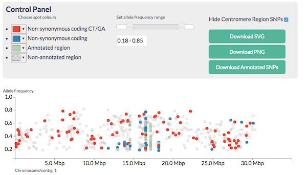

Finding Causative Mutations With A Candidate SNP Approach
Visualising SNPs To Find Candidates
Learning Objectives
- Understand CandiSNP output
- Plotting frequencies of SNPs of different types across the chromosome
Once we have a list of SNPs that we are happy with and have annotated them with SNPEff, there are a couple of approaches we can take to start finding candidates that may be our causative mutation.
The approach we take will depend on the genetic background. As we discussed at the start, we are generally looking for a region of high homozygous SNPs, but the frequency of other SNPs will depend on the cross. A wide cross from a fairly distant relative (like a different strain or ecotype) as is commonly used in genetic mapping strategies will allow us to make use of the heterozygous SNPs as a control.
Fast interactive visualisations are a great help in finding the recombinant region and narrowing the candidates. One tool that allows us to do this is CandiSNP. CandiSNP is a JavaScript visualisation package that allows interactive filtering and highlighting of SNPs across whole chromosomes (DISCLAIMER: My group wrote this!)
It allows you to look at the SNPs like this: 
and apply filters to narrow down the region and candidates so you see this:

CandiSNP after filtering - the region of the high red spot density is the recombinant one
CandiSNP takes an annotated VCF file as input.
Statistical methods are useful when the number of SNPs generated is so large that you can’t visualise them all at the same time.
Density plots like this one (which is of the same data as the CandiSNP):

Density plot of Homozygous, Heterozygous SNP density and the ratio of Hom/Het SNPS in slifing windows
help us to see the rough patterns in a similar way. The homozygous and heterozygous show an increase in the SNP-rich centromeric region which biases the data and an overall decrease at the far right of the chromosome, but the enriched region is visible in the high ratio at about 17Mbp as in the CandiSNP output. These kinds of plots can be generated with Galaxy’s plotting tools.
Analyse SNP data with CandiSNP
You have some whole genome Arabidopsis SNP data annotated with SNPEff in the shared data library Visualisation, the VCF file filtered_snps.vcf. Use this in the candisnp tool in the CandiSNP tool set. This data set is a real one and we know exactly where the mutation is because we’ve sequenced it, so there is a right answer. Use the sliders and filter tools to find a region enriched in homozygous candidate SNPs.
- Can you come up with candidate regions / genes for the causative mutation?
- Which is more useful, filtering or colouring?
- How much extra information does knowing the genes give? In this specific training case and in a real case where you might know something about the biology already.
Generate density plots of different SNP classes
Standard Galaxy tools can generate histograms of data. However the data needs to be in tabular format, not VCF. Here’s a little recipe for going from VCF to a table that is useful.
- To make a tabular file, use the
Text Manipulation .. Cut Columns Tool. Cut out columnsc1,c2,c3,c4,c8,c9. - To strip text from the AF field and just leave the numbers, use the
Text Manipulation .. Trim Leadingoncolumn 5, trim to position4and set toignore#. - To get the homozygous SNPs, use the
Filter and Sort .. Filter data on any columntool. Filter onc5>=0.75(or whatever seems sensible to you). - To get the heterozygous SNPs, do step
3again but filter onc5<0.75.
This will leave you with two files on which to carry out the remaining steps.
- To split the files into single chromosome files use
Text Manipulation .. Split file according to value of a columnusecolumn 1(the chromosome column) - For each resulting file you can use
Plotting .. Histogramto make the histograms. It is useful to add the density plot and to use around 150 breaks.
With a bit more work you can combine the different plots into one large one for easier comparison, and you can use sliding window tools to calculate the ratio of Hom/Het SNPs across the chromosomes.
Comparing density plots
- Use the numerous density plots you made to compare the likely positions of the causative SNPs
- Can you narrow down the area sufficiently to examine the text list in more detail?
- What further filtering could you do to make the plots more effective?